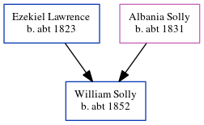

Alfred Lawrence c1854 -
[ Home ] | [ Calendar ] | [ Surnames Index ] | [ Errors ] | [ Family History ]The child of Ezekiel Lawrence (a labourer bricklayer) and Albania Solly, Alfred Lawrence, the first cousin three-times-removed on the mother's side of Nigel Horne, was born in Lydden, Kent, England c. 1854 and baptised in St Lawrence, Thanet, Kent, England on 3 Dec 1854. On 7 Apr 1861, he was living at Broad Street, Ramsgate, Kent, England1.
Parents
- Ezekiel was born c. 1823
- Albania was born c. 1831
Citations
- 1861 England, Wales & Scotland Census - Findmypast (was age 7 and the son of the head of the household)
Media
1861 England, Wales & Scotland Census - GBC/1861/0003533515
Kent Baptisms - GBPRS/CANT/B/96403913
England Births & Baptisms 1538-1975 - R_884654095
Family Tree
Map
Generated by ged2site. Last updated on Jul 3, 2024
Known Issues
Birth date (abt 1854) has no citations